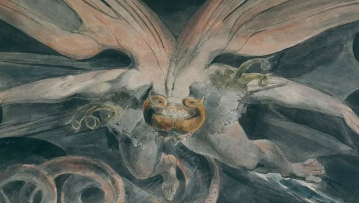

The Seed of a Story that Became a Twenty-year obsession
What turned Phil's story from from a light-weight puff-piece for a creative writing course into an obsession that has seen dozens of re-writes and consumed thousands of hours? To celebrate the (near) completion of the book, I sat down with myself to discuss the jounrey to The Crossroads...

So... before we start, it's worth clarifying that you're interviewing yourself here... or I am, I suppose.
Yes, that's right. It's an opportunity to explore some of the ideas in the book in a kinda fun way I guess.
Sure. A little schizophrenic though?
Well... I'm a writer and if that isn't a socially acceptable form of schizophrenia then I don't know what is.
Prayer?
Haha... yeah. I guess that'd be another one. But maybe we can come to that later. Anyway, I'm ready so... I guess I can start.
You will! Firstly, I'm the guy who thinks about our readership, ok? So although I know you've got a whole world of backstory behind the writing of this thing, I'm gonna start by reminding you that no-body cares, ok?
Haha... yes, that's fair. I should say that I just wrote a long history of writing the book and then deleted the whole thing.
Because I told you to.
And I agreed.
Good. So let's not talk about that again.
Ok. But all I want to say is... twenty-fucking-years. That's how long this has taken. Hundreds of thousands of words... re-writes, drafts, edits...
Your life. Your choice. But instead of moaning about it, why don't you tell us why anyone else should care about this book?
Haha... ok, ok. And look: you don't have to. That's fine. There's lots of other stuff out there, and you're right: I wrote it because I wanted to. But I honestly think that it's a valid piece of work with some important things to say about the world we're in.
What does it say?
I suppose there's three main pillars that hold the book together: the religious side, the AI side, and the... exploration of modern masculinity.
Start with the religious one...
I think that's covered a lot in the Circles and Triangles article, but the summary is just that religion is failing to provide us with moral guidance and without that we're in real trouble. Religion should give us some kind of direction and purpose but it's been going nowhere for centuries; it's completely out of touch with the modern world. So the book, with this Messianic lead character, tries to address that in a kinda funny way. I mean, calling the Gods Jo Over, Bill Z. Bubb, Sid, Al and things... it's silly. Is it offensive? Maybe. Do I care? Not really. I'm sorry if I offended you but... there are some religious behaviours that really offend me too, so maybe we need to talk about it like adults instead of screaming about hurting God's feelings. Anyway: yes, it satirises religion in a way that some people will find offensive and others might find funny but... c'est la vie as we say in England.
The AI side?
So that's a new one... the last piece of the jigsaw that I only really introduced a while ago...
Don't start talking about writing the book!
Haha... sorry. But AI is fucking nuts, right. It's arrived, almost fully packaged and has completely changed the way we work and deal with... understanding itself. I've uploaded poetry and received some really intelligent analysis of it. The kinda stuff that's made me look at myself differently. It's wild. But are we ready for it? Abso-fucking-lutely not! But is it coming? Abso-fucking-lutely. There is no stopping this thing now, and I really don't think there are many books that are ready to look, in the eyes, at the changes that have taken place over the past few years.
Black Mirror does a good job, in isolation; and there's a lot of non-fiction that is staring down the barrel, but I feel like art is often very good at long-term predictions and reflecting on the past, but this kind of immediate threat isn't always the preserve of fiction and we need it now more than ever.
I mean, what are we going to do about work? Work has been so embedded in our culture that it's often our name itself. The question 'What do you do?' means what job do you do. But we're going to need to find a way to define ourselves without that soon. I've been dreaming of a world without work since I was a kid, but now it's finally getting here I'm not sure we're ready to deal with it.
In the book you talk a lot about the collective subconscious, which was an old Jungian idea wasn't it. But you also talk about AI as a reflection of that. How does that fit together?
AI is just a mirror of what it's read. LLMs might seem like they can offer something new, but it's really only aware of what it's been fed - which is all human experience (or the internet anyway.) And I don't mean that as a criticism or to highlight a limit, what I mean is that it has been created out of the collected awareness of humanity - because it's not just knowledge, it's attitudinal as well; that's why I mentioned the poetry: it doesn't just know things, it makes judgements as though it feels them as well.
Our fear of AI is currently the fear of the 'other' as though AI is someone new, some kind of Skynet that's come alive, but that isn't what it is. It's us, it's an incredible librarian with access to the collected awareness - which is just like the collective subconscious - of our people.
But what blew me away, is that that's what I'd always thought God was. I imagined God as a being who lived in the collective subconscious of our people and had access to all that understanding. In the early drafts of the book, that's what God was. But then I realised that... that is what AI is. AI is a kind of God. It's just not conscious of itself... they're not the same thing, but they're similar. And so, to find a narrative that pitched those two against each other - the Gods and AI - provided really fertile ground.
And tell me about how AI affects the society of the book.
It's just a Black Mirror version of the UK really. It's the same as today but with different jobs and an AI overlord. I mean the money thing is different - the super-rich Coiniers who live apart from society, the squeezed middle-class who work for CCS Credits, and the Slums where the poor are sent once they've fallen out of the economy - that's new and I think it isn't far from where we're heading either. Class systems are becoming deeply ingrained again, like we're slipping back to the Middle Ages.
But with AI, the important area that I wanted to explore is that although it might seem alive, it isn't. It isn't alive. And that changes things completely, and in ways I don't think we appreciate.
I mean, look, there's two things here: firstly, AI is going to be better than us at everything. There is nothing we can do that AI and robotics won't be able to do better than us. And that's a humbling experience until you realise the second thing: that AI has no idea it's doing it. Those two pieces of understanding should completely re-shape human experience.
The point of life isn't to be the best at anything. If that's your point, if that's the purpose - if you only live to be the best - you're going to lose. But it never was the point anyway; the point of life is to experience it. To feel the joy of writing a song, or painting a picture, or scoring a goal, or breathing the air, or falling in love and having your heart broken. The point of life isn't to write an amazing poem to the one you love, it's to write a god-awful shitty poem, read it to them at three in the morning, then feel embarrassed about it until your one true love finds you and tells you that despite the fact that it was utter nonesense, it was from you and they love you for it.
We cannot beat AI. There's no point in trying. But we don't need to because we already have the Crown Jewels: we're alive and that's what AI has taught me, and that's what we need to celebrate, and if we don't start doing that soon, we'll buckle under our own crushing insecurities and fuck the whole thing.
And you said you wanted to talk about masculinity as well? How is that explored in the book?
The culture wars are everywhere these days; it's impossible to avoid them - for good reason too. I think it's a complicated time to be alive, for everyone. But everyone includes men. to be honest, I'd rather leave the judgement of the characters and their behaviour up to the reader but I will say that this is a book written by a western man and it addresses some particularly western male issues.
Like what?
I suppose the book explores a certain kind of masculine question in particular: how do you change things when they're all going wrong? I think this is the period when men often struggle the most. We want to do what's right and we're willing to fight for it - we'll die for it - but what you fight for... who you fight... whether you fight at all... whether the strongest thing to do is allow for time to pass... Des, Simon, Phil, Kai and Bill all have very different methods but their desire is the same: how do we make the world a better place?
What I really wanted to do with the book was set those men against each other. Have them fight it out. Have them know - on some level - that they're all fighting the same battle, but have them be drawn into conflict, with each other, because... well, I'll have to leave that to the reader to decide.
I don't think any of them were wrong, but they were all wrong as well.
Last thing I want to ask is, what should people expect from the book? What kind of a story is it?
It's not really a genre piece. I think I once said it was like Woody Allen and Douglas Adams wrote something like The Matrix meets The Name of the Rose. It's definitely sci-fi, it's definitely theology, it's definitely psychoanalysis, and it's definitely trying to be funny - in places anyway. If there was an author I'd compare it to it might be John Wyndham - the fantastic '50s British sci-fi writer - because I think we share a love of epic scale and a strong sense of the sardonic. Yes, it's all going to shit, but isn't life just ridiculous! He's a real hero of mine.
But mainly, I'd say that tis isn't literature, it isn't trying to be great; it's a beach-reading page-turner that, I hope, will leave you with something to think about.
Lovely. Thanks. We'll call it a day there.
Great. Thank you. Was an interesting experience.
Have a good day.
You too.
*awkward silence*
Section Heading
More article text goes here.